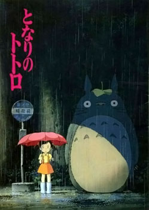
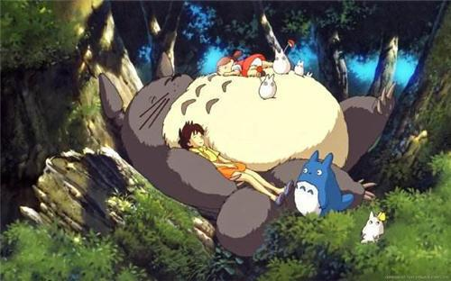
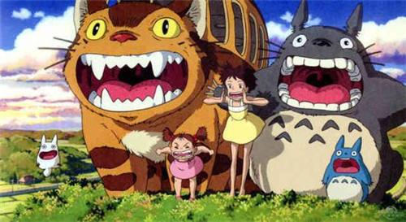
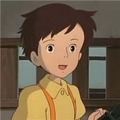
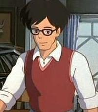
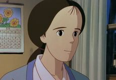

《龍貓》（日語：となりのトトロ）
《龍貓》（日語：となりのトトロ）是吉卜力工作室與德間書店於1988年推出的一部動畫電影，由宮崎駿所執導。電影描寫的是日本在經濟高度發展前存在的美麗自然，那個只有孩子才能看見的不可思議世界和豐富的想像，因為喚起觀眾的鄉愁而廣受大眾歡迎。《龍貓》在1988年4月16日於日本公映，大約有80萬人次進入電影院觀看，同時上映的還有高畑勳執導的電影《螢火蟲之墓》。該作也是宮崎駿電影在中國大陸公映的首部作品。在作品中出現的「皋月和梅的家」，亦在2005年日本國際博覽會的瀨戶市會場中展出。
導演｜宮崎駿
監製｜原徹
編劇｜宮崎駿（兼原作）
主演｜日高範子、坂本千夏、糸井重里、島本須美、高木均、北林谷榮
配樂｜久石讓
片尾曲｜〈鄰家的龍貓〉
攝影｜白井久男、黑田洋一
剪輯｜瀨山武司
製片商｜吉卜力工作室
片長｜88分鐘
語言｜日語
內容簡介：
故事背景設定於1958年（昭和33年），一位大學教授「草壁達郎」和他的兩個女兒「皋月、梅」搬進一個森林附近的一所舊房子，而教授的妻子「草壁靖子」因染上了結核病，在附近的一所醫院養病中。 搬來新家的皋月和梅，都在家中及附近發現各種奇妙的東西，如家裡藏著像是小黑球模樣的「煤炭球」。而梅某一天也在外頭發現可以將外表變不見「小龍貓」、為了追趕它而被引領到樹洞裡發現森林的守護者「大龍貓」；並且在一個下雨的晚上，當皋月和梅在公車站牌邊等爸爸時，她們都遇到了用樹葉擋雨、先前梅在樹洞裡看到的大龍貓，不久「貓巴士」來到，大龍貓給予皋月一包種子後登上貓巴士離去。 之後有一天傳從醫院得知媽媽的病情惡化，梅想把一個成熟的玉米帶給媽媽時、不小心迷了路，當眾人都遍尋不著後，皋月跑去找大龍貓幫忙。之後大龍貓召喚了貓巴士，在貓巴士的幫助下，梅被迅速找到了，並且接送皋月和梅穿過鄉間，到醫院探望她們的媽媽，最後草壁達郎在醫院中得知她們的媽媽病情好轉，不久就可以出院。
導演簡介：
宫崎骏
宮崎駿在東映動畫開始他的職業生涯，並參加《格列佛的宇宙旅行》的製作。他在這部作品中提出自己的想法，並最終成為電影的結局。他在動畫產業以各種不同的角色參與工作，直到他在1979年執導第一部動畫長片《魯邦三世卡里奧斯特羅之城》。在他的下一部電影《風之谷》獲得廣泛的讚譽，他與高畑勳共同創立吉卜力工作室，並繼續創作許多作品。直到完成《魔法公主》之後，宮崎駿選擇暫時退休。在休息一陣子之後，宮崎駿在2001年完成動畫《神隱少女》。
電影簡介

為了方便妻子草壁靖子養病，草壁達郎決定帶著兩個女兒草壁五月和草壁梅搬到草壁靖子所在療養院附近的鄉下，父女三人入住了一間年久失修的老房子。小姐妹倆很快發現看似平凡無奇的鄉下有很多神奇的事物，無人居住的房屋裡能聚能散還能飛的「煤灰」、森林裡的小精靈、森林的主人龍貓和笑口常開的貓巴士
夏天快過去的時候，小月和小梅收到醫院的電報，媽媽身體不舒服，姐妹倆非常的擔心媽媽的情況。小梅抱怨姐姐不管自己，姐姐怪小梅不懂事，小梅大哭著喊著姐姐是個笨蛋跑遠了。小月慌忙四處尋找小梅。
天色將晚，小月想到向龍貓求助，龍貓幫小月喚來了貓巴士車，終於找到了迷路的小梅。之後，貓巴士車又帶著姐妹倆來到了媽媽的病房窗前。遠遠的看到一切平安的媽媽，姐妹倆不知道有多麼快樂。小梅慌忙把迷路時摘的玉米送給了媽媽，希望她早日康復。

《童真的世界，永遠快樂多過沮喪，仿佛這世界有多嘈雜都與他們無關。他們永遠有自己的一片淨土，所記得的也只是歡事，偶爾幾許烏雲飄來也會很快消散。他們僅僅只是活在自己的快樂中，可以天真的想像，天真的做著一切近乎可能被完成的夢。
原文網址：https://kknews.cc/comic/j5zemzy.html
人物介紹
故事的主角，為一名11歲就讀小學四年級的女孩。性格堅毅有朝氣，因母親住院因素而在家中代理母職，負責打理大部分的家務。
皋月5歲的妹妹，也是故事的主角之一。性格活潑、善於觀察週遭有趣事物的小女生，也常因冒失的舉動讓姊姊皋月擔心。
皋月及梅的父親，是一間大學裡的考古學教授。平時在家中忙於撰寫論文，也常與膝下兩名女兒一同玩鬧，性格溫柔的父親。
是草壁皋月及草壁梅的母親，因為生病暫時住醫院。

年齡為1,302歲，身體呈灰綠色，為友善的森林守護者，主食為橡子外型是3隻龍貓中最大的一隻，至少有三公尺高；一般來說龍貓指的就是最大的這一隻。在劇中被稱呼的名稱「トトロ」（Totoro）源自草壁梅問它名字的時候，它發出了類似「TO、TO、RO（意為好睏喔——）」的聲音，於是梅認為那就是它的名字。